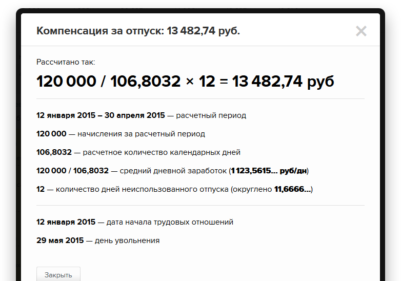
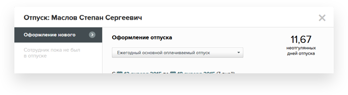
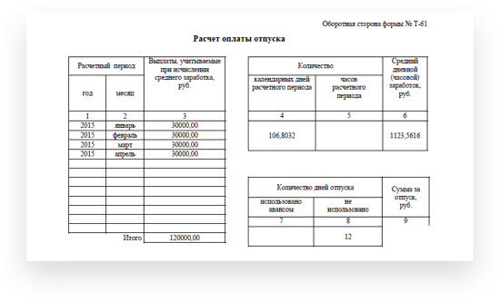
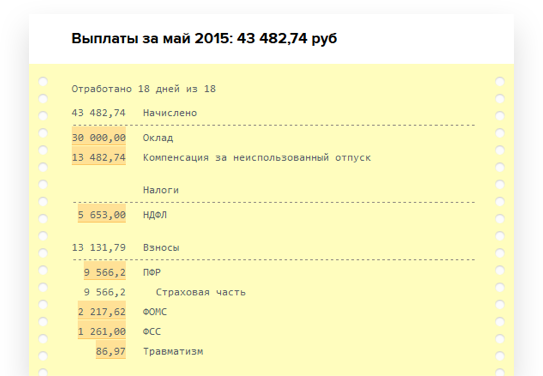

Расчет и оформление
выплат сотрудникам
выплат сотрудникам
Как рассчитать компенсацию
за неиспользованный отпуск
при увольнении сотрудника?
за неиспользованный отпуск
при увольнении сотрудника?
Пошаговый алгоритм расчета с формулой и примерами.
Бесплатный калькулятор для самопроверки.
Бесплатный калькулятор для самопроверки.
1
Рассчитайте дни неиспользованного отпуска
Количество
неиспользованных
дней отпуска
неиспользованных
дней отпуска
=
Продолжительность
полного ежегодного
отпуска (28 дней)
полного ежегодного
отпуска (28 дней)
÷
12 мес
×
Количество
отработанных
месяцев
отработанных
месяцев
—
Количество
использованных
дней отпуска
использованных
дней отпуска
Посмотреть пример
2
Определите расчетный период
Чаще всего — это 12 месяцев, предшествующих месяцу отпуска. Если сотрудник проработал меньше года, расчетный
период — с первого дня работы до последнего дня месяца перед увольнением.
период — с первого дня работы до последнего дня месяца перед увольнением.
3
Рассчитайте заработок за расчетный период
Сложите суммы всех начислений, которые предусмотрены системой оплаты труда в компании:
зарплата, надбавки, доплаты, трудовые премии. Не берите в расчет материальную помощь,
денежные подарки к праздникам и т. п.
зарплата, надбавки, доплаты, трудовые премии. Не берите в расчет материальную помощь,
денежные подарки к праздникам и т. п.
4
Определите расчетное количество календарных дней
Cреднее количество календарных дней
Повторить для всех месяцев, которые
отработаны не полностью
отработаны не полностью
Расчетное
количество
календарных
дней
количество
календарных
дней
=
29,3
×
Месяцы в расчетном
периоде, которые
отработаны
полностью
периоде, которые
отработаны
полностью
+
29,3
÷
Календарные дни
в месяце, который
отработан
не полностью
в месяце, который
отработан
не полностью
×
Отработанные дни
в месяце, который
отработан
не полностью
в месяце, который
отработан
не полностью
Посмотреть пример
5
Сумма компенсации
Компенсация за
неиспользованный
отпуск
неиспользованный
отпуск
=
Заработок
за расчетный
период
за расчетный
период
÷
Расчетное
количество
календарных дней
количество
календарных дней
×
Количество
неиспользованных
дней отпуска
неиспользованных
дней отпуска
Посмотреть пример
Рассчитайте компенсацию
за неиспользованный отпуск
в Программе Главбух
за неиспользованный отпуск
в Программе Главбух
Онлайн-сервис определит сумму компенсации и предоставит
подробное объяснение расчета. Так же, как в примере.

подробное объяснение расчета. Так же, как в примере.
Программа Главбух сама считает
количество дней отпуска сотрудника
количество дней отпуска сотрудника
Один раз заполняете информацию о работнике. Пока сотрудник работает — в любой момент
это число можно посмотреть на странице сотрудника, во вкладке «Отпуск»

это число можно посмотреть на странице сотрудника, во вкладке «Отпуск»
При увольнении программа сразу же сообщит
количество дней компенсации и суммы выплат:
компенсации за отпуск и зарплаты за остаток
месяца.
количество дней компенсации и суммы выплат:
компенсации за отпуск и зарплаты за остаток
месяца.
По умолчанию сервис предложит округлить дни до целого
значения. А если нужно, на лету пересчитает сумму
компенсации из фактического количества дней.
значения. А если нужно, на лету пересчитает сумму
компенсации из фактического количества дней.


Программа подробно объяснит расчет
компенсации за отпуск
компенсации за отпуск
В записке-расчете справки Т-61, которую программа
заполняет при оформлении увольнения.
заполняет при оформлении увольнения.
Программа перенесет сумму компенсации
за отпуск в расчетный листок сотрудника
за отпуск в расчетный листок сотрудника
Все выплаты работнику за месяц: компенсация,
зарплата за остаток месяца, взносы и НДФЛ.
зарплата за остаток месяца, взносы и НДФЛ.

И, главное!
Как только отчетный период закончится, Программа Главбух полностью заполнит
4 ФСС и РСВ-1 и перенесет все суммы выплат в нужные строки отчетности.
4 ФСС и РСВ-1 и перенесет все суммы выплат в нужные строки отчетности.
Что еще умеет Программа Главбух
Считать зарплату, командировочные,
больничные и остальные выплаты
больничные и остальные выплаты
Заполнять кадровые документы
в момент расчета
в момент расчета
Начислять НДФЛ, взносы и готовить
отчетность: 4-ФСС, РСВ-1, 2-НДФЛ
отчетность: 4-ФСС, РСВ-1, 2-НДФЛ
Давать рекомендации по зарплатному
и кадровому учету
и кадровому учету